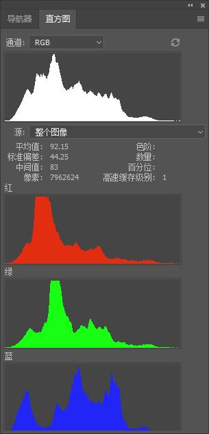
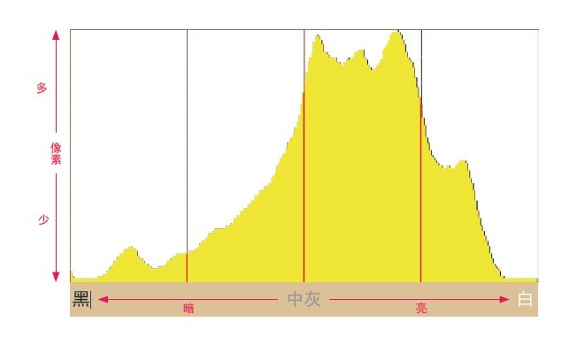
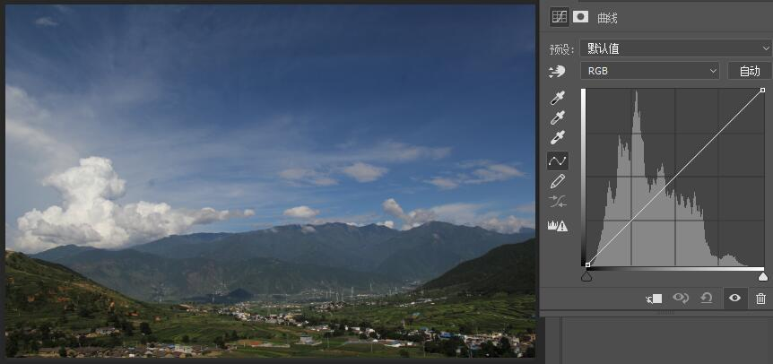
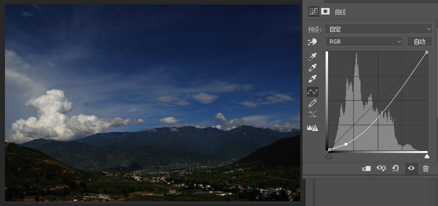
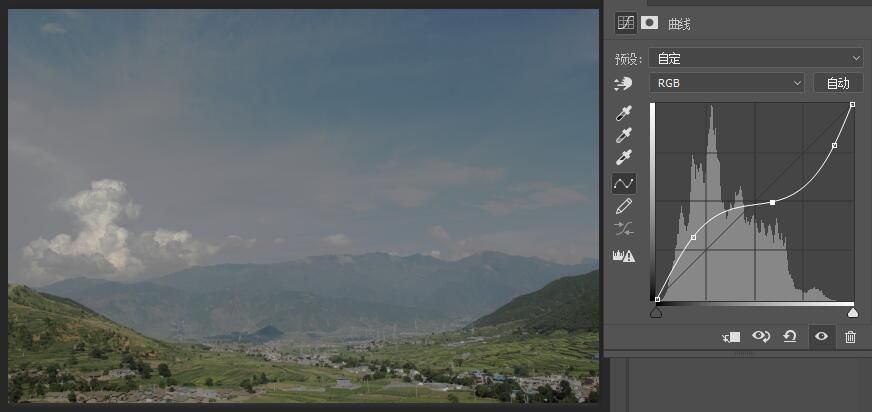

<!DOCTYPE html><html lang="en"><head><meta charset="utf-8"><title>曲线调整工具与直方图 | Zthxxx&#39;s Wiki</title><meta name="keywords" content="图像格式"><meta name="viewport" content="width=device-width,initial-scale=1,maximum-scale=1"><meta name="description" content="引入「曲线工具」这个东西，经常修图或做视频的人一定不陌生，它在很多图像视频工具中都有出现，比如 AE、PR、PS、LR 等中；其强大之处自不用我多说，这里主要针对还未入门的 零基础 的朋友作一个基本的介绍和认识。  在谈到「曲线工具」之前，不得不先谈到图像「直方图」这个东西； 「直方图」简单的来说，直方图是统计图片中按照不同的明暗级别从黑到白（从暗到明），统计在某个亮度的像素数量有多少。（以下谈到"><meta name="keywords" content="图像格式"><meta property="og:type" content="article"><meta property="og:title" content="曲线调整工具与直方图"><meta property="og:url" content="http://wiki.zthxxx.me/wiki/计算机基础知识/图形图像/曲线调整工具/index.html"><meta property="og:site_name" content="Zthxxx&#39;s Wiki"><meta property="og:description" content="引入「曲线工具」这个东西，经常修图或做视频的人一定不陌生，它在很多图像视频工具中都有出现，比如 AE、PR、PS、LR 等中；其强大之处自不用我多说，这里主要针对还未入门的 零基础 的朋友作一个基本的介绍和认识。  在谈到「曲线工具」之前，不得不先谈到图像「直方图」这个东西； 「直方图」简单的来说，直方图是统计图片中按照不同的明暗级别从黑到白（从暗到明），统计在某个亮度的像素数量有多少。（以下谈到"><meta property="og:locale" content="en"><meta property="og:image" content="http://wiki.zthxxx.me/wiki/计算机基础知识/图形图像/曲线调整工具/PS曲线工具.jpg"><meta property="og:image" content="http://wiki.zthxxx.me/wiki/计算机基础知识/图形图像/曲线调整工具/PS图像直方图.jpg"><meta property="og:image" content="http://wiki.zthxxx.me/wiki/计算机基础知识/图形图像/曲线调整工具/直方图坐标轴解释.jpg"><meta property="og:image" content="http://wiki.zthxxx.me/wiki/计算机基础知识/图形图像/曲线调整工具/直方图常见形式示例.jpg"><meta property="og:image" content="http://wiki.zthxxx.me/wiki/计算机基础知识/图形图像/曲线调整工具/PS曲线工具.jpg"><meta property="og:image" content="http://wiki.zthxxx.me/wiki/计算机基础知识/图形图像/曲线调整工具/曲线调整-初始.jpg"><meta property="og:image" content="http://wiki.zthxxx.me/wiki/计算机基础知识/图形图像/曲线调整工具/曲线调整-上凸-加亮.jpg"><meta property="og:image" content="http://wiki.zthxxx.me/wiki/计算机基础知识/图形图像/曲线调整工具/曲线调整-下凸-减暗.jpg"><meta property="og:image" content="http://wiki.zthxxx.me/wiki/计算机基础知识/图形图像/曲线调整工具/曲线调整-S型-提高对比度.jpg"><meta property="og:image" content="http://wiki.zthxxx.me/wiki/计算机基础知识/图形图像/曲线调整工具/曲线调整-反S型-降低对比度.jpg"><meta property="og:image" content="http://wiki.zthxxx.me/wiki/计算机基础知识/图形图像/曲线调整工具/曲线调整-反对角线-反相.jpg"><meta property="og:updated_time" content="2018-04-01T03:04:14.165Z"><meta name="twitter:card" content="summary"><meta name="twitter:title" content="曲线调整工具与直方图"><meta name="twitter:description" content="引入「曲线工具」这个东西，经常修图或做视频的人一定不陌生，它在很多图像视频工具中都有出现，比如 AE、PR、PS、LR 等中；其强大之处自不用我多说，这里主要针对还未入门的 零基础 的朋友作一个基本的介绍和认识。  在谈到「曲线工具」之前，不得不先谈到图像「直方图」这个东西； 「直方图」简单的来说，直方图是统计图片中按照不同的明暗级别从黑到白（从暗到明），统计在某个亮度的像素数量有多少。（以下谈到"><meta name="twitter:image" content="http://wiki.zthxxx.me/wiki/计算机基础知识/图形图像/曲线调整工具/PS曲线工具.jpg"><link rel="alternate" href="/atom.xml" title="Zthxxx&#39;s Wiki" type="application/atom+xml"><link rel="icon" href="/favicon.ico"><link rel="stylesheet" href="/libs/font-awesome/css/font-awesome.min.css"><link rel="stylesheet" href="/libs/open-sans/styles.css"><link rel="stylesheet" href="/libs/source-code-pro/styles.css"><link rel="stylesheet" href="/css/style.css"><script src="/libs/jquery/2.1.3/jquery.min.js"></script><script src="/libs/jquery/plugins/cookie/1.4.1/jquery.cookie.js"></script><link rel="stylesheet" href="/libs/lightgallery/css/lightgallery.min.css"><link rel="stylesheet" href="/libs/justified-gallery/justifiedGallery.min.css"><script async src="//dn-lbstatics.qbox.me/busuanzi/2.3/busuanzi.pure.mini.js"></script></head></html><body><div id="container"><header id="header"><div id="header-main" class="header-inner"><div class="outer"><a href="/" id="logo"><i class="logo"></i> <span class="site-title">Zthxxx&#39;s Wiki</span></a><nav id="main-nav"> <a class="main-nav-link" href="/">首页</a> <a class="main-nav-link" href="/archives">归档</a> <a class="main-nav-link" href="/categories">分类</a> <a class="main-nav-link" href="/tags">标签</a> <a class="main-nav-link" href="/about">关于</a></nav><div id="search-form-wrap"><form class="search-form"> <input type="text" class="ins-search-input search-form-input" placeholder="Search"> <button type="submit" class="search-form-submit"></button></form><div class="ins-search"><div class="ins-search-mask"></div><div class="ins-search-container"><div class="ins-input-wrapper"> <input type="text" class="ins-search-input" placeholder="Type something..."><span class="ins-close ins-selectable"><i class="fa fa-times-circle"></i></span></div><div class="ins-section-wrapper"><div class="ins-section-container"></div></div></div></div><script>window.INSIGHT_CONFIG={TRANSLATION:{POSTS:"Posts",PAGES:"Pages",CATEGORIES:"Categories",TAGS:"Tags",UNTITLED:"(Untitled)"},ROOT_URL:"/",CONTENT_URL:"/content.json"}</script><script src="/js/insight.js"></script></div></div></div><div id="main-nav-mobile" class="header-sub header-inner"><table class="menu outer"><tr><td><a class="main-nav-link" href="/">首页</a></td><td><a class="main-nav-link" href="/archives">归档</a></td><td><a class="main-nav-link" href="/categories">分类</a></td><td><a class="main-nav-link" href="/tags">标签</a></td><td><a class="main-nav-link" href="/about">关于</a></td><td><div class="search-form"> <input type="text" class="ins-search-input search-form-input" placeholder="Search"></div></td></tr></table></div></header><div class="outer"><aside id="sidebar"><div class="widget-wrap" id="categories"><h3 class="widget-title"> <span>categories</span> &nbsp;<a id="allExpand" href="#"><i class="fa fa-angle-double-down fa-2x"></i></a></h3><ul class="unstyled" id="tree"><li class="directory"><a href="#" data-role="directory"><i class="fa fa-folder"></i> &nbsp; 技术开发</a><ul class="unstyled" id="tree"><li class="directory"><a href="#" data-role="directory"><i class="fa fa-folder"></i> &nbsp; Git</a><ul class="unstyled" id="tree"><li class="file"><a href="/wiki/技术开发/Git/Git-commit-message-基本规范/">Git commit message 基本规范</a></li><li class="file"><a href="/wiki/技术开发/Git/Git-清理已追踪或未添加追踪的文件/">Git 清理已追踪或未添加追踪的文件</a></li></ul></li><li class="directory"><a href="#" data-role="directory"><i class="fa fa-folder"></i> &nbsp; Linux</a><ul class="unstyled" id="tree"><li class="directory"><a href="#" data-role="directory"><i class="fa fa-folder"></i> &nbsp; Shell</a><ul class="unstyled" id="tree"><li class="file"><a href="/wiki/技术开发/Linux/Shell/awk-管道操作小结/">awk 管道操作小结</a></li></ul></li><li class="directory"><a href="#" data-role="directory"><i class="fa fa-folder"></i> &nbsp; Ubuntu</a><ul class="unstyled" id="tree"><li class="file"><a href="/wiki/技术开发/Linux/Ubuntu/Ubuntu-16-开机默认命令行界面/">Ubuntu 16.04 开机默认命令行界面</a></li></ul></li><li class="directory"><a href="#" data-role="directory"><i class="fa fa-folder"></i> &nbsp; Vim</a><ul class="unstyled" id="tree"><li class="file"><a href="/wiki/技术开发/Linux/Vim/Vim-粘贴模式/">Vim 粘贴模式</a></li></ul></li><li class="file"><a href="/wiki/技术开发/Linux/Linux-命令控制屏幕/">Linux 命令控制屏幕</a></li></ul></li><li class="directory"><a href="#" data-role="directory"><i class="fa fa-folder"></i> &nbsp; 前端</a><ul class="unstyled" id="tree"><li class="file"><a href="/wiki/技术开发/前端/Selenium-中使用-Chrome-路径问题/">Selenium 中使用 Chrome 路径问题</a></li><li class="file"><a href="/wiki/技术开发/前端/Webpack-中-css-import-使用-alias-相对路径/">Webpack 中 css import 使用 alias 相对路径</a></li><li class="file"><a href="/wiki/技术开发/前端/gulp-imagemin-使用与参数设置/">gulp-imagemin 使用与参数设置</a></li></ul></li><li class="directory"><a href="#" data-role="directory"><i class="fa fa-folder"></i> &nbsp; 架构</a><ul class="unstyled" id="tree"><li class="file"><a href="/wiki/技术开发/架构/IaaS-PaaS-SaaS-概念/">IaaS, PaaS, SaaS 概念</a></li></ul></li><li class="directory"><a href="#" data-role="directory"><i class="fa fa-folder"></i> &nbsp; 算法</a><ul class="unstyled" id="tree"><li class="file"><a href="/wiki/技术开发/算法/八大排序算法复杂度/">八大排序算法复杂度</a></li></ul></li><li class="directory"><a href="#" data-role="directory"><i class="fa fa-folder"></i> &nbsp; 软件工程</a><ul class="unstyled" id="tree"><li class="file"><a href="/wiki/技术开发/软件工程/GitHub团队任务管理流程/">GitHub 团队任务管理流程</a></li><li class="file"><a href="/wiki/技术开发/软件工程/语义化版本号-2-0-0/">语义化版本号 2.0.0</a></li></ul></li></ul></li><li class="directory"><a href="#" data-role="directory"><i class="fa fa-folder"></i> &nbsp; 生活学习</a><ul class="unstyled" id="tree"><li class="file"><a href="/wiki/生活学习/DISC-行为风格理论/">DISC 行为风格理论</a></li><li class="file"><a href="/wiki/生活学习/点滴人生观念信条/">点滴人生观念信条</a></li><li class="file"><a href="/wiki/生活学习/马斯洛需求层次理论/">马斯洛需求层次理论</a></li></ul></li><li class="directory"><a href="#" data-role="directory"><i class="fa fa-folder"></i> &nbsp; 程序语言</a><ul class="unstyled" id="tree"><li class="directory"><a href="#" data-role="directory"><i class="fa fa-folder"></i> &nbsp; CSS</a><ul class="unstyled" id="tree"><li class="file"><a href="/wiki/程序语言/CSS/CSS 属性声明顺序规范/">CSS 属性声明顺序规范</a></li></ul></li><li class="directory"><a href="#" data-role="directory"><i class="fa fa-folder"></i> &nbsp; Java</a><ul class="unstyled" id="tree"><li class="file"><a href="/wiki/程序语言/Java/Java-访问控制符/">Java 访问控制符</a></li></ul></li></ul></li><li class="directory"><a href="#" data-role="directory"><i class="fa fa-folder"></i> &nbsp; 艺术</a><ul class="unstyled" id="tree"><li class="directory"><a href="#" data-role="directory"><i class="fa fa-folder"></i> &nbsp; 平面设计</a><ul class="unstyled" id="tree"><li class="file"><a href="/wiki/艺术/平面设计/平面设计入门导图/">平面设计入门导图</a></li></ul></li></ul></li><li class="directory open"><a href="#" data-role="directory"><i class="fa fa-folder-open"></i> &nbsp; 计算机基础知识</a><ul class="unstyled" id="tree"><li class="directory open"><a href="#" data-role="directory"><i class="fa fa-folder-open"></i> &nbsp; 图形图像</a><ul class="unstyled" id="tree"><li class="file active"><a href="/wiki/计算机基础知识/图形图像/曲线调整工具/">曲线调整工具与直方图</a></li><li class="file"><a href="/wiki/计算机基础知识/图形图像/渐进式-JPEG-格式/">渐进式 JPEG 格式</a></li></ul></li><li class="file"><a href="/wiki/计算机基础知识/Windows系统入门操作导图/">Windows 系统入门操作导图</a></li><li class="file"><a href="/wiki/计算机基础知识/字符集与字符编码/">字符集与字符编码</a></li></ul></li><li class="file"><a href="/wiki/index/">Welcome Zthxxx's Wiki Site</a></li></ul></div><script>$(document).ready(function(){var r="fa-folder-open",i="fa-folder",l="fa-angle-double-down",d="fa-angle-double-up";$(document).on("click",'#categories a[data-role="directory"]',function(a){a.preventDefault();var e=$(this).children(".fa"),s=e.hasClass(r),l=$(this).siblings("ul");e.removeClass(r).removeClass(i),s?(void 0!==l&&l.slideUp({duration:100}),e.addClass(i)):(void 0!==l&&l.slideDown({duration:100}),e.addClass(r))}),$('#categories a[data-role="directory"]').bind("contextmenu",function(a){a.preventDefault();var e=$(this).children(".fa"),s=e.hasClass(r),l=$(this).siblings("ul"),d=$.merge(l.find("li ul"),l),o=$.merge(l.find(".fa"),e);o.removeClass(r).removeClass(i),s?(d.slideUp({duration:100}),o.addClass(i)):(d.slideDown({duration:100}),o.addClass(r))}),$(document).on("click","#allExpand",function(a){a.preventDefault();var e=$(this).children(".fa"),s=e.hasClass(l);e.removeClass(l).removeClass(d),s?($("#sidebar .fa.fa-folder").removeClass("fa-folder").addClass("fa-folder-open"),$("#categories li ul").slideDown({duration:100}),e.addClass(d)):($("#sidebar .fa.fa-folder-open").removeClass("fa-folder-open").addClass("fa-folder"),$("#categories li ul").slideUp({duration:100}),e.addClass(l))})})</script><div id="toTop" class="fa fa-angle-up"></div></aside><section id="main"><article id="post-计算机基础知识/图形图像/曲线调整工具" class="article article-type-post" itemscope="" itemprop="blogPost"><div class="article-inner"><header class="article-header"><div class="article-meta"><div class="article-category"><i class="fa fa-folder"></i> <a class="article-category-link" href="/categories/计算机基础知识/">计算机基础知识</a><i class="fa fa-angle-right"></i><a class="article-category-link" href="/categories/计算机基础知识/图形图像/">图形图像</a></div><div class="article-tag"><i class="fa fa-tag"></i> <a class="tag-link" href="/tags/图像格式/">图像格式</a></div><div class="article-date"><i class="fa fa-calendar"></i> <a href="/wiki/计算机基础知识/图形图像/曲线调整工具/"><time datetime="2017-03-21T07:05:28.000Z" itemprop="datePublished">2017-03-21</time></a></div><i class="fa fa-bar-chart"></i><span id="busuanzi_container_site_pv"><span id="busuanzi_value_page_pv"></span></span><div class="article-meta-button"> <a href="https://github.com/zthxxx/Wiki-site/raw/writing/source/_posts/计算机基础知识/图形图像/曲线调整工具.md" rel="external nofollow noopener noreferrer" target="_blank">Source</a></div><div class="article-meta-button"> <a href="https://github.com/zthxxx/Wiki-site/edit/writing/source/_posts/计算机基础知识/图形图像/曲线调整工具.md" rel="external nofollow noopener noreferrer" target="_blank">Edit</a></div><div class="article-meta-button"> <a href="https://github.com/zthxxx/Wiki-site/commits/writing/source/_posts/计算机基础知识/图形图像/曲线调整工具.md" rel="external nofollow noopener noreferrer" target="_blank">History</a></div></div><h1 class="article-title" itemprop="name"> 曲线调整工具与直方图</h1></header><div class="article-entry" itemprop="articleBody"><h2 id="引入"><a href="#引入" class="headerlink" title="引入"></a>引入</h2><p><strong>「曲线工具」</strong>这个东西，经常修图或做视频的人一定不陌生，它在很多图像视频工具中都有出现，比如 AE、PR、PS、LR 等中；其强大之处自不用我多说，这里主要针对还未入门的 <strong>零基础</strong> 的朋友作一个基本的介绍和认识。</p><p></p><p>在谈到「曲线工具」之前，不得不先谈到图像<strong>「直方图」</strong>这个东西；</p><h2 id="「直方图」"><a href="#「直方图」" class="headerlink" title="「直方图」"></a>「直方图」</h2><p>简单的来说，<strong>直方图是统计图片中按照不同的明暗级别从黑到白（从暗到明），统计在某个亮度的像素数量有多少。</strong>（以下谈到直方图，若无特指，那均指 RGB 全通道亮度直方图，不谈论色相）</p><p>我们先看看 PS 中的直方图是什么样的；</p><p></p><p>四个框中，最上面就是全通道的直方图，下面三个依次是 RGB 三个通道的直方图；<strong>直方图的横轴表示亮度级别</strong>，左边表示最暗，向右依次变亮，最右边表示最亮最白；<strong>纵轴表示像素数量</strong>。</p><p>我们再来看一个简化版的示意图；</p><p></p><p>举个例子，假设上面这张简化的直方图是统计一张 <strong>只有 22 个像素</strong>的图片，那么可以从直方图中看到 <strong>统计结果</strong>：</p><p>纯黑的像素有 3 个、灰度一级的像素有 2 个、中度灰色的有 5 个、 …… 、纯白的有 2 个。</p><p>嗯，上面这个图结合例子很好理解吧，那让我们<strong>把它扩展一下，道理还是不变，只是把分级加精细一点，像素加多一点</strong>，导出一张真实一点的我们实际中常见样子的直方图；</p><p></p><p>直观看出，这张直方图所代表的原始图片中，<strong>中等偏亮的像素点在整个图片中占主体</strong>；也就是图片整体颜色是偏亮系的，看起来不是暗色调的。</p><p><strong>类似的，假设图片直方图中只形成了一个山峰，如果山峰位置偏右边，就表示图片整体是暗色调的；如果山峰位置偏左，就表示图片整体看起来是亮色系的，整体色调是明亮的。</strong></p><p>【这里注意，摄影和修图的重点都是自己到底想表达什么，不要过度纠结于传统观念，就认为山峰靠右就一定是曝光失误造成欠曝一定要调整曝光等等；主要是看自己的想法，有些场景可能就需要这样，不是失误欠曝，比如表现夜空中的明月或星空。】</p><p>说完直方图，我们就可以回过来看<strong>「曲线工具」</strong>了。</p><h2 id="「曲线工具」"><a href="#「曲线工具」" class="headerlink" title="「曲线工具」"></a>「曲线工具」</h2><p></p><p>再看到曲线工具，就要注意调整框内，背景中的 <strong>阴影山峰</strong> 了，这就是刚刚讲的 <strong>直方图</strong>。</p><p><strong>「曲线工具」</strong> 其实是 <strong>曲线调整 + 直方图</strong>，两者 <strong>横坐标共用，含义都一样</strong>，指 <strong>亮度分级</strong>；</p><p><strong>但纵坐标含义就不一样了</strong>。</p><p><strong>曲线工具的纵坐标也是指亮度分级，没错，纵坐标和横坐标的含义与数值分布完全一样！</strong></p><p>再看上面这条线，虽然名字叫「曲线工具」，但是打开工具初始状态下这根线就是直线，只不过可以添加关键点来把直线拖成曲线。</p><p>初始状态下的直线，是从左下连到右上的，相当于是从横纵轴都最暗的地方，连到横纵轴都最亮的地方；</p><p>也就是：</p><p>$$y = f(x) = x , (0 \leq x \leq 255)$$</p><p>现在我们再说一下纵坐标 y 和横坐标 x 的一点区别；<strong>这条线上一个点的横坐标值，表示图片上的某个原始亮度值，纵坐标表示这个原始亮度经过调整后的亮度变成了多少。</strong></p><p>合起来的意思就是，这条曲线（或直线）表示对原图色彩的一种映射，<strong>把原图的每个色彩亮度，映射到现在的每个对应的色彩亮度</strong>，即：</p><p>$$y = f(x) , (0 \leq x \leq 255 , x = 原始亮度 , y = 调整后亮度)$$</p><p>比如说常见的 S 型曲线可以加深对比度，其实就是把原本暗的变得更暗，把原本亮的变得更亮，所以对比度就变高了。</p><p>基于这个道理，接下来解释几种基本曲线的调整方式；</p><h3 id="初始直线"><a href="#初始直线" class="headerlink" title="初始直线"></a>初始直线</h3><p></p><p>初始直线相当于原本什么亮度现在还是什么亮度，什么都没变，就是画面原本的样子。</p><h3 id="上凸曲线"><a href="#上凸曲线" class="headerlink" title="上凸曲线"></a>上凸曲线</h3><p></p><p>对比原始图片，现在用的上凸曲线除了端点的每个点都在 $y = x$ 直线上方，也就是不管是暗的还是亮的每个点都不同程度的加亮了一些，所以整个画面看起来都亮了。</p><h3 id="下凸曲线"><a href="#下凸曲线" class="headerlink" title="下凸曲线"></a>下凸曲线</h3><p></p><p>与上凸曲线刚好相反，下凸曲线都在 $y = x$ 直线之下，每个点都不同程度的调暗了一点，所以整体画面变暗。</p><h3 id="S-型曲线"><a href="#S-型曲线" class="headerlink" title="S 型曲线"></a>S 型曲线</h3><p></p><p>S 型曲线最常见，通常修图都会先拉起对比度，也就是调了个 S 型曲线；刚刚也说过，S 型曲线左边暗部在 $y = x$ 之下，右边亮部在 $y = x$ 之上，相当于把暗的点调的更暗，把亮的点调得更亮，于是明暗差异变大，对比度也就提高了。</p><h3 id="反-S-型曲线"><a href="#反-S-型曲线" class="headerlink" title="反 S 型曲线"></a>反 S 型曲线</h3><p></p><p>反 S 型曲线与 S 型曲线方向看起来相反，作用也刚好相反，它是把暗部调亮，亮部调暗，明暗差异变小，用来降低对比度的。</p><h3 id="反对角线"><a href="#反对角线" class="headerlink" title="反对角线"></a>反对角线</h3><p></p><p>对比初始直线，这里反对角线其实就是 $y = -x$ 直线，相当于把所有明暗亮度对称颠倒过来，这里的亮度也包括相位，于是所有颜色反相了，看起来就是将图片反色处理了。</p><h2 id="参考资料"><a href="#参考资料" class="headerlink" title="参考资料"></a>参考资料</h2><blockquote><ul><li><a href="http://academy.fengniao.com/322/3228845_all.html#p3228845" rel="external nofollow noopener noreferrer" target="_blank">如何读懂直方图</a></li><li><a href="https://www.zhihu.com/question/20511799" rel="external nofollow noopener noreferrer" target="_blank">如何看懂照片的直方图？</a></li><li><a href="http://www.nphoto.net/news/2010-04/28/6e47b1395e6f0f5d.shtml" rel="external nofollow noopener noreferrer" target="_blank">『摄影入门』怎样知道照片曝光是否合适？直方图！</a></li><li><a href="http://www.uisdc.com/ps-curve-skill" rel="external nofollow noopener noreferrer" target="_blank">教你轻松掌握PS曲线工具</a></li><li><a href="http://www.jb51.net/photoshop/465856.html" rel="external nofollow noopener noreferrer" target="_blank">ps曲线工具的详细使用方法介绍</a></li></ul></blockquote></div><footer class="article-footer"></footer></div></article><nav id="article-nav"> <a href="/wiki/计算机基础知识/字符集与字符编码/" id="article-nav-newer" class="article-nav-link-wrap"><strong class="article-nav-caption">Newer</strong><div class="article-nav-title"> 字符集与字符编码</div></a> <a href="/wiki/艺术/平面设计/平面设计入门导图/" id="article-nav-older" class="article-nav-link-wrap"><strong class="article-nav-caption">Older</strong><div class="article-nav-title">平面设计入门导图</div></a></nav><script type="text/javascript">!function(){var e=window.location.href,r=document.referrer;if(!/([http|https]:\/\/[a-zA-Z0-9\_\.]+\.baidu\.com)/gi.test(e)){var o="//api.share.baidu.com/s.gif";r?(o+="?r="+encodeURIComponent(document.referrer),e&&(o+="&l="+e)):e&&(o+="?l="+e),(new Image).src=o}}(window)</script></section></div><footer id="footer"><div class="outer"><div id="footer-info" class="inner"> zthxxx &copy; 2018 <a rel="external nofollow noopener noreferrer" href="http://creativecommons.org/licenses/by-nc-nd/4.0/" target="_blank"></a><br> Powered by <a href="http://hexo.io/" target="_blank" rel="external nofollow noopener noreferrer">Hexo</a>. Theme - <a href="https://github.com/zthxxx/hexo-theme-Wikitten" rel="external nofollow noopener noreferrer" target="_blank">wikitten</a><br><span id="busuanzi_container_site_pv"><i class="fa fa-eye"></i><span id="busuanzi_value_site_pv"></span></span> |<span id="busuanzi_container_site_pv"><i class="fa fa-user"><span id="busuanzi_value_site_uv"></span></i></span></div></div></footer><script src="/libs/lightgallery/js/lightgallery.min.js"></script><script src="/libs/lightgallery/js/lg-thumbnail.min.js"></script><script src="/libs/lightgallery/js/lg-pager.min.js"></script><script src="/libs/lightgallery/js/lg-autoplay.min.js"></script><script src="/libs/lightgallery/js/lg-fullscreen.min.js"></script><script src="/libs/lightgallery/js/lg-zoom.min.js"></script><script src="/libs/lightgallery/js/lg-hash.min.js"></script><script src="/libs/lightgallery/js/lg-share.min.js"></script><script src="/libs/lightgallery/js/lg-video.min.js"></script><script src="/libs/justified-gallery/jquery.justifiedGallery.min.js"></script><script type="text/x-mathjax-config">
    MathJax.Hub.Config({
        tex2jax: {
            inlineMath: [ ["$","$"], ["\\(","\\)"] ],
            skipTags: ['script', 'noscript', 'style', 'textarea', 'pre', 'code'],
            processEscapes: true,
            TeX: {
                equationNumbers: {
                  autoNumber: 'AMS'
                }
            }
        }
    });
    MathJax.Hub.Queue(function() {
        var all = MathJax.Hub.getAllJax();
        for (var i = 0; i < all.length; ++i)
            all[i].SourceElement().parentNode.className += ' has-jax';
    });
</script><script async src="//cdnjs.cloudflare.com/ajax/libs/mathjax/2.7.1/MathJax.js?config=TeX-AMS-MML_HTMLorMML"></script><script src="/js/main.js"></script></div></body>